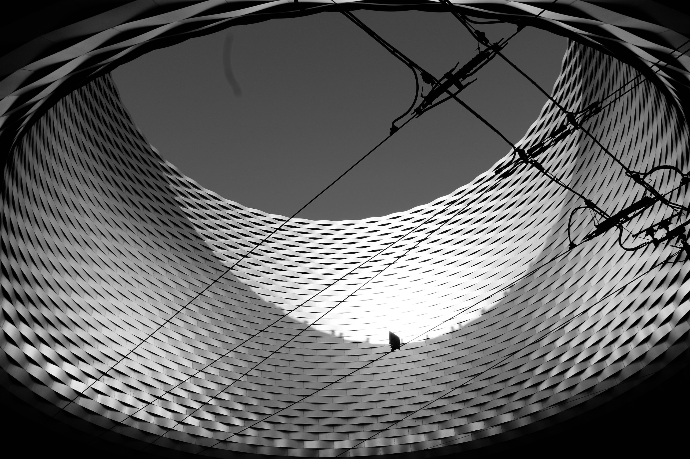

Nutzung
Die Messe Basel dient als zentraler Ort für Messen, Kongresse und Ausstellungen und ist somit ein wichtiger Begegnungsort für Einheimische und Touristen. Die Anlage beherbergt jährlich viele Veranstaltungen wie Fachmessen (z.B. Art Basel), Publikumsveranstaltungen (z.B. Herbstmesse oder Fantasy Basel), Kongresse, Konzerte (z.B. Baloise Session), Sportevents (z.B. Hybrid Games Switzerland) sowie Firmenanlässe. Dank der flexibel kombinierbaren Räumlichkeiten kann die Messe vielseitig genutzt und individuell an die Anforderungen verschiedener Veranstaltungen angepasst werden [21] [22].

Nachhaltigkeit
Die Messe Basel wurde unter besonderer Berücksichtigung ökologischer Kriterien geplant und umgesetzt. Das Ingenieurbüro Stefan Graf war für die Nachhaltigkeitsberatung zuständig. Der Neubau verfügt über eine hochwärmedämmende Gebäudehülle und ist an das Fernwärmenetz der Stadt Basel angeschlossen. Zudem werden die Zielwerte der SIA-Norm 380/4 in den Bereichen Beleuchtung, Lüftung und Klimatisierung eingehalten. Als einziges Messegebäude der Schweiz trägt die Messe Basel das Minergie-Zertifikat (BS-054). Zusätzlich ist das Dach begrünt und mit einer Photovoltaikanlage ausgestattet. Durch die zentrale Lage innerhalb der Stadt wird die Nutzung des öffentlichen Verkehrs gefördert, wodurch der motorisierte Individualverkehr reduziert wird, erklärte uns der Maschineningenieur Stefan Graf über das Telefon. Die nachhaltige Positionierung der Messe Basel zeigt, wie räumliche Planung und technische Gebäudeausrüstung gemeinsam zur ökologischen Verantwortung beitragen können [23][21].
Architektonische Bedeutung
Die beiden Foyers des Gebäudes werden durch über 110 Meter lange LED-Bänder, hochauflösende Screens und dynamisch steuerbare Lichtbestimmungen geprägt. Diese Elemente erfüllen neben einer einladenden Atmosphäre auch kommunikative Funktionen. Da sie flexibel verändert werden können, kann die Messe Basel die visuellen Inhalte an unterschiedliche Veranstaltungen, Kundenanforderungen und Kommunikationsbedürfnisse anpassen. Aus architektonischer Sicht wird der Raum dadurch zu einer wandelbaren Bedienoberfläche, die sich beliebig anpassen lässt [24].
Ein weiteres zentrales architektonisches Element des Neubaus der Messe ist die City Lounge. Dabei handelt es sich um einen überdachten öffentlichen Raum mit Tramhaltestelle. Sie markiert den Haupteingang zu den Messe- und Eventhallen und ist zugleich ein sozialer Treffpunkt im Stadtraum. Besonders auffällig ist die kreisrunde Öffnung im Lichthof, durch die Besucher direkt in den Himmel blicken können [25].
